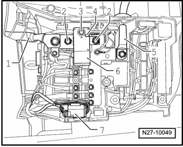

Initial Inspection and Diagnostic Overview
Main Battery Switch, Recognizing Deployment
• A main battery switch that has been deactivated (battery/starter circuit isolated) can be reset using the reset button on the switch.
CAUTION!
In the event a main battery switch has been deactivated, the starter circuit must be tested for a short circuit prior to resetting.
When activated, sight glass appears copper - 4 -. When deactivated, sight glass appears white.
